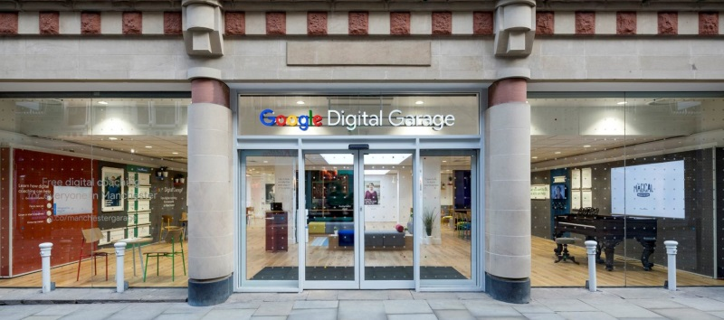

More than a coding school
Assignment 2
1.1 Describing the purpose of IT modern business:
IT purpose in Modern business is because for information, increases productivity, great for speeding business deals allowing networking, storing documents, transmits, manipulates data, saving time, self service distributing sending much quicker.
1.2 Describing methods, skills and resources needed to complete digital projects successfully – what do you need to make projects successful? What tools? What skills?
To make projects successful: Good communicator having the ability to communicate with all people at all levels this is mostly important skill by project managers and team members.
Data collection: This is under 3 three basic groups of research (quantitative, qualitative and mixed), there are different tools that can be used to collect data.
here is a reference read the
link
1.3 Plan and carry out tasks using IT – e.g. making your website. How will you plan it? Include a link to your trello board.
Here's an example of how you can employ Trello to start managing a content marketing project with your team.
- Create a team space
- Create a board
- Add team members to the team space and boards...
- Create lists...
- Break down tasks into cards...
- Assign tasks to team members...
- Set a due date...
- Add subtasks, descriptions, and attachments.
1.4 Describe the risks that might impact digital projects – what causes digital projects to fail? Why?
Projects most commonly fail because there is a lack of attention and efforts being applied to seven project performance factors: Focus on business value, not technical detail. This involves establishing a clear link between the project and the organizations key strategic practices.
1.5 Describe how you would go about selecting and using IT systems and software – how do you select the right kind of technology for the job?
Health IT specialist:
Health IT is a blossoming field, especially with major changes going on in healthcare due to the Affordable Care Act and the gradual transition to electronic health records. Health IT specialists will mix computer knowledge will record-keeping skills, but specialties in medical coding, billing and cancer registry are also in demand, according to TBS.
Education: While some health IT jobs require only an associate degree and/or certification, supervisory technician positions call for bachelor’s and master’s degrees.
1.6 Describe and provide analysis on how your chosen technologies have helped you achieve your outcomes. – How has trello helped you plan and how can git and GitHub help with your codes version control
Trello blog has helped to understand information on how to plan and get the git and GitHub
1.7 Describe legal guidelines and constraints that impact digital projects – How does GDPR impact digital projects?
Reading and getting involved with the updates on the on the www.gov website:
2.1 Review the ongoing use of IT tools and change approach as needed – in making your own website, are you happy with the tools you used? E.g. Visual Studio Code, Codepen, Trello.
used all the IT tools for the website I used Trello a web - based design I used which the layout adding selecting cards and Doing, Done and Done is a great project to work from has an intriguing interface (you can even drag task cards across columns, Trello easy.
Link to Trello
2.2 Describe whether the IT tools selected were appropriate E.g. Visual Studio Code, Codepen, Trello
Each one of the IT tools were relevant to the project whether Trello, Codepen and Visual Studio Code
2.3 Assess the strengths and weaknesses of your final project – are you happy with your website? Why? Why not? You should review it on the website itself in the interests of openness. What would you change?
The website Strengths shows that it has the Colour, Font, trello and weakness would be that classroom teaching was missed did do independent learning a barrier I got through.
2.4 Describe further improvements you can make to your project
would add more skill such as CSS and HTML put more input to the project
3.1 Review the benefits and drawbacks of IT tools and systems used in terms of productivity and efficiency – could you have been more efficient when making your website? How? Could you have done it in teams?
can increase businesses, check for performance I would put in more work towards the website its basic as having to speed up I worked efficiently to the project timescales and deadline
3.2 Describe ways to improve productivity and efficiency:
workplace Technology helps to increase economic whether through productivity and communication
3.3 Develop solutions to improve own productivity using IT in digital projects – what would you do differently next time? Team work? Use of Slack?
More Communication with the Team
Have a Team meeting
Use Slack for instant messaging
3.4 Describe how you would go about testing digital solutions:
to have the software digitally tested and make sure there is no defects reduce risk.
Changed the website from its original its now violet background red fonts
